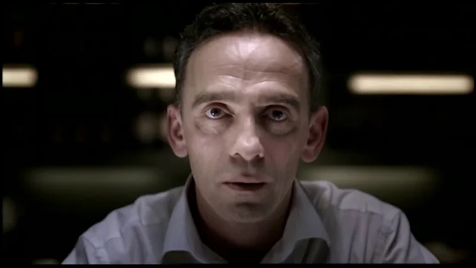
Department for Transport / 1979
Drink Drive, 1979 to 2009
Fifty years of films in under two minutes. Watch the target change.
The campaign archive / Edition 02 / Proof first

“This time I started from the other end, with campaigns that can show they worked.”
Edition 01 ended on an awkward finding. The most famous campaigns rarely prove they worked. Every case here comes with a published record of how it was measured, and all fifteen are papers from the IPA Effectiveness Awards, which have asked agencies to prove their work since 1980.
15 case studies / 1958 to 2019
Opening story / BT / 1994
In 1994 BT kept a new campaign off air across the Central ITV region. Measured against Central, the campaign paid back £297m.
01 / The finding
13 of the 15 campaigns here have a public estimate of their own effect. In Edition 01 the count was 1. Several of these are among the best-known ads in Britain, so fame isn’t what separates them. Somebody decided to keep score.
The habit is older than you might think. Krona launched in just two ITV regions in 1978 so its sales could be read cleanly. BT left a whole region dark in 1994. By 2026 Nestlé could put a lifetime profit figure on a line written in 1958.
Proof isn’t always flattering. When Bovril tested a revival in 1984, with the Central region as a control, the advertising recovered over half its cost in the short term. Award papers are also written by the agencies that made the work. They are the best public record we have, and they are not audits.
Edition 02Edition 01
02 / The patterns
Edition 01’s five mechanisms all appear again, plus one more. Owning a moment ties a brand to an occasion people already keep, which also gives the effect a regular place to show up. Choose one to filter the archive.
Stage the benefit so people can see it for themselves.
Say the uncomfortable thing first and make it the point.
Hand the audience a part to play and let them spread it.
Show people a judgement they did not know they held.
Put people in the picture who were missing from it.
Tie the brand to an occasion people already keep.
03 / The screening room
Four films from official channels. Look for the choice that makes each one work, then read how it was measured.

Department for Transport / 1979
Fifty years of films in under two minutes. Watch the target change.
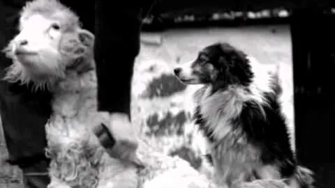
Specsavers / 2002
A mistake, a beat, then the line.
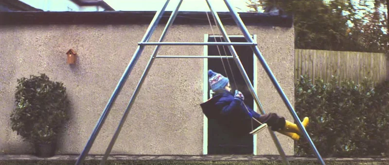
John Lewis / 2011
Watch where the boy is looking on Christmas morning.
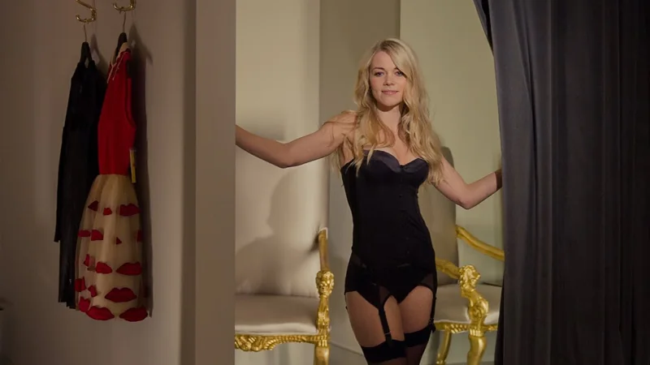
Spies Rejser / 2014
Notice how long it plays the joke straight.
04 / The collection
Open a case for the idea, the lesson, my take and how it was proved. You’ll also find the image credit and a link to watch the work or the case film.
Modelled effectSales trendSurveyReach only or archival
15 campaigns
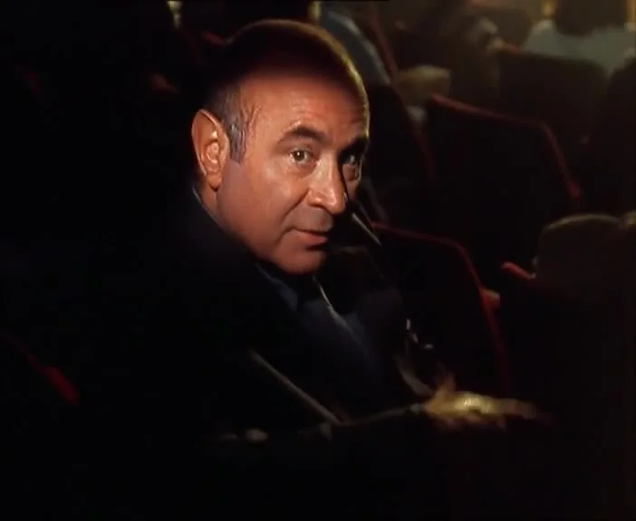
BT / 1994 / Exposing an assumptionIt’s Good to TalkA phone company that asked people to stay on the line. £297mPayback against a control regionIPA 1996 · Grand Prix · Abbott Mead Vickers BBDO for British Telecom
Abbott Mead Vickers BBDO cast Bob Hoskins in three TV campaigns across 1994 and 1995, all built on one line: it’s good to talk.
If you want proof, hold something back. One region without the ads tells you more than a year of tracking.
Leaving a whole ITV region dark takes nerve, and it’s why this paper won the Grand Prix. Most brands still won’t give up the reach to learn the answer.
Image: BT, Private Payphone (1994) · Telephonic Youth exhibition
People thought phone calls were expensive, so they kept them short. BT wanted to change that perception and get people talking for longer.
BT sold the conversation and let the minutes follow. The paper itself calls the campaign ‘a piece of social engineering’.
Casting Hoskins gave the campaign a familiar, down-to-earth voice. The line is short enough to say back in conversation, which suits a campaign about conversation.
Call duration rose in step with the campaign, and the Central region showed what happened without it. Very few national campaigns are tested this way. The public summary doesn’t say whether the £297m is revenue or profit.
BT kept the campaign off air in the Central ITV region. Comparing calls there with the rest of the country isolated what the advertising added.
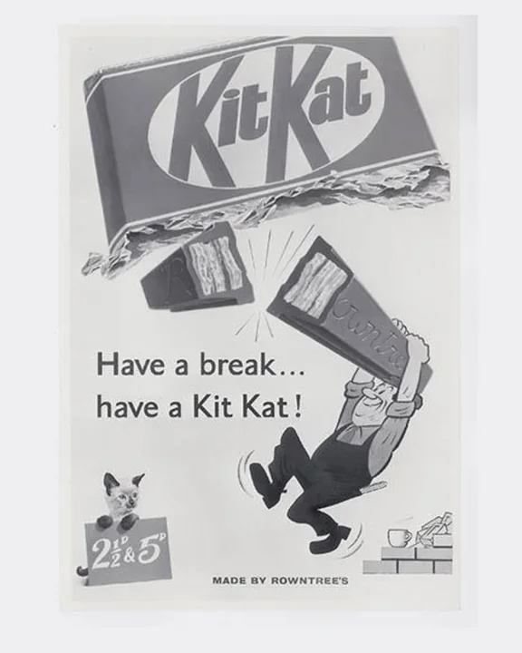
KitKat / 1958 / Owning a momentHave a Break, Have a KitKatA chocolate bar that claimed the tea break. £2.18Profit per £1 over the line’s lifeIPA 2026 · Commendation · VML and OpenMind UK for Nestlé
In 1957 Donald Gilles at JWT London wrote ‘Have a break, have a KitKat’. It reached television in 1958 and tied the bar to a moment people already had every day.
Name a moment people already have, and every later campaign has somewhere to live.
Most brand lines last a few years. This one is older than colour television in Britain, and it now has a profit figure attached.
Rowntree’s launched the bar in 1935 as Chocolate Crisp, after a worker suggested something a man could take to work in his pack. Early ads called it ‘the biggest little meal’ and ‘the perfect companion to a cup of tea’.
KitKat stopped selling a snack and started owning the pause. Later work stretched the break into new products, defended it when culture turned against breaks and rebuilt it for a distracted digital world.
The line is an instruction. Six words tell you what to do and give you permission to do it, which worked in a 1958 canteen and still works on a phone screen.
The 2026 paper estimates £3.56bn of incremental revenue and £677m of lifetime net profit from the idea. Any estimate that reaches back to 1958 has to fill gaps in the early data, and the public summary doesn’t explain how. It was entered by the brand’s current agencies and won a Commendation.
The paper values the idea across almost seventy years of activity and gives the result three ways: incremental revenue, lifetime net profit and profit per £1.
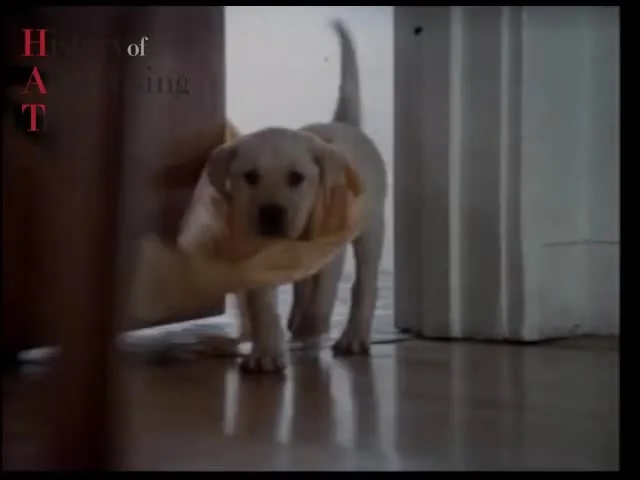
Andrex / 1972 / DemonstrationThe Andrex PuppyA Labrador, a trailing roll and twenty years of leadership. 30%Brand share by 1992IPA 1992 · First Prize · J. Walter Thompson for Scott
The first plan was a little girl running through the house trailing a roll. Television regulators thought it would encourage children to be wasteful, so in 1972 a Labrador puppy took her place.
When the subject is awkward, find a stand-in that carries the claim and is a pleasure to watch.
The regulator who blocked the little girl did Andrex a huge favour. Constraints often push you to the better idea.
Toilet tissue was at risk of becoming a commodity. Andrex needed to show softness, strength and length without dwelling on what the product is for.
The puppy carried every claim at once. A soft animal stood for softness, and an unbroken trail through the house showed strength and length.
The regulators’ objection created the brand’s best asset. A child making that mess looks naughty. A puppy making the same mess is irresistible.
Twenty years of share growth, plus Millward Brown blind testing that showed unusual loyalty. The paper argues the advertising held off Kleenex Velvet and helped sales, and it won the IPA’s ‘longer and broader effects’ category. The public summary gives no modelled return, so it sits a rung below most of this edition.
The authors set two decades of share data against a well-funded rival launch, Kleenex Velvet, and added blind product tests on loyalty.
IPA 1980 · First Prize · Davidson Pearce for Van den Berghs
Davidson Pearce and the broadcaster René Cutforth made no claim for Krona at all. The films talked about a brand that was a success in Australia, and the rumour there that it wasn’t margarine. Krona, they said, was its counterpart.
When the rules stop you making a claim, build the idea around the conclusion people will reach for themselves.
The first IPA winner had no modelled return, just share data and surveys. Most of this page shows how far that bar has risen since 1980.
Van den Berghs had the first margarine in the UK that looked and tasted like butter. The Margarine Regulations banned any comparison with butter, and shoppers distrusted butter-parity claims after Stork.
A rule that should have silenced the product became the story. Krona took its sales mainly from butter, which was exactly the point.
The whole launch rests on an implication. The viewer makes the comparison the advertiser wasn’t allowed to make.
The 1980 paper used distribution, brand share, awareness, trial and repurchase data, with Taylor Nelson surveys and qualitative research. The public summary quotes none of the numbers. As the first winner it shows where the standard of proof started.
Krona launched at the end of 1978 in just two ITV regions, Harlech and Westward, with TV in short bursts. Two regions gave clean share and source-of-sales data to judge it by.
IPA 2012 · Gold · Leo Burnett for the Department for Transport
Successive governments ran one long campaign in four phases, aimed in turn at attitudes, acceptability, denial and the decision on the night. From 1987 to 1997 ‘Drinking and driving wrecks lives’ moved the focus from the offender to victims and their families.
A long campaign can change its target as the problem changes. The drinker of 1979 needed a different argument from the drinker of 2009.
This is the case I’d show anyone who says advertising can’t be measured. It counts lives, and it shows the return rising and falling as the strategy changed.
Image: THINK! road safety, 50 Years of Drink Drive Campaigns · official YouTube thumbnail
Britain had a legal limit and the breathalyser from 1967, yet drink-driving was still a common cause of death and serious injury on the roads.
The argument changed as the drinker changed. The campaign worked first on what people thought about drink-driving, then on whether friends would accept it, then on the excuses drivers made, and finally on the choice itself.
‘Pudding’, from 1993, cuts from a family bringing in a blazing Christmas pudding to a phone call from the police. The end line becomes ‘Drinking and driving wrecks Christmas’.
A modelled estimate of lives and injuries saved, valued at £3bn to society. The return varies widely by phase: £154, £12 and £38 for every £1 in the second, third and fourth. Enforcement, safer cars and drinking habits all changed over the same thirty years, so the model has to separate the campaign from them.
The authors modelled drink-drive casualties from 1979 to 2009, estimated how many were avoided because of the communications and put a value on the deaths and injuries prevented.
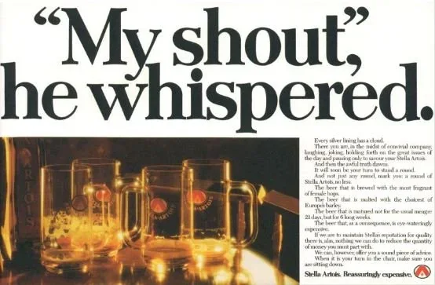
Stella Artois / 1982 / Reframed weaknessReassuringly ExpensiveA lager that sold its price as the proof. 192%Return on advertising, 1980s pressIPA 1992 · Lowe Howard-Spink for Whitbread
Lowe Howard-Spink added one end-line to its press ads: ‘Reassuringly expensive’. The price stopped being a reason to hesitate and became the evidence of quality.
If a fact about your product puts people off, test whether it can become the proof.
The blind-test detail is the whole case. Take the name away and nobody prefers it. Put the price back and they pay more. That gap is what a brand is worth.
Image: Stella Artois and Lowe Howard-Spink, My shout, he whispered · reproduced by WordDept
In blind tests drinkers did not prefer Stella Artois to other draught lagers, and it was not stronger than several of them. What it did have was a higher price.
Each group of drinkers read the line its own way. Connoisseurs heard flavour, ‘headbangers’ heard strength and style-seekers heard exclusivity. Keeping it in the press let each group hold its reading in private.
Brands usually explain a high price away. This one put it in the headline and let drinkers feel clever for paying it.
The 1992 paper rules out sales force activity, packaging, sponsorship, promotions, strength and taste, then estimates at least £7m of profit and a 192% return. A later IPA paper models £242.76m of revenue from £21.1m of media and production between 1995 and 1999. The two papers cover different periods with different methods.
The authors worked through the other explanations and discounted each one, then showed five years of sales growth rising with advertising weight. Growth stalled when rivals outspent Stella in the late 1980s, which supports the link.
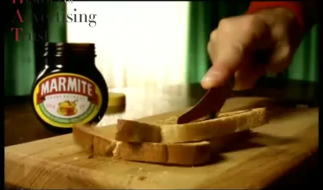
Marmite / 1996 / Reframed weaknessLove It or Hate ItA spread that admitted half the country can’t stand it. £53.5mExtra sales from £12.4m of advertisingIPA 2002 · Silver · adam&eveDDB for Unilever Bestfoods
In October 1996 the agency now called adam&eveDDB launched ‘Love it or hate it’. The ads gave the haters equal time and made the split itself the brand.
Admitting a weakness everyone already knows can be more persuasive than denying it.
I’d have bet against a client approving an ad that gives equal time to people who hate the product. The model says it was one of the best decisions Marmite ever made.
Image: Marmite and BMP DDB, I Hate (1996–97) · History of Advertising Trust
The market Marmite sold into was shrinking and many former buyers had drifted away. Its taste had always split opinion.
Disliking Marmite became part of the appeal, and lapsed users came back. ‘The Marmite effect’ entered the language for anything that divides opinion.
Few brand lines become figures of speech. People call a film or a politician ‘Marmite’ without a thought of toast.
Econometrics credit £12.4m of advertising with £53.5m of extra sales, and estimate that without the advertising and PR sales would have fallen by 26%. In fact the brand grew about 5% a year in a declining market. The figures cover advertising and PR together.
An econometric model estimated what sales would have done without the advertising and PR. The answer was a 26% fall over a period in which the brand actually grew.
IPA 2014 · Gold · Manning Gottlieb OMD for Specsavers
Graham Daldry at The Agency, Specsavers’ in-house team, came up with ‘Should’ve gone to Specsavers’ in 2002. Each ad shows a small disaster caused by poor eyesight, like a farmer shearing his sheepdog.
A line that frames the problem as a joke can be renewed for decades without wearing out.
I like that this came from an in-house team. The best line in British optics was written by people who knew the business inside out.
Specsavers had advertised continuously since the 1980s, at high weight and with a broad appeal. In 2002 it found a line that could carry all that spend.
Poor eyesight became a running joke the whole country was in on. The line turned into something people say to each other after any blunder.
Every execution follows the same shape: a mistake, a beat, then the line. You can predict the ending and still laugh.
The paper credits nearly £500m of advertising with £1.1bn of incremental profit. That covers all Specsavers advertising since the 1980s, including the years before the line, and a thirty-year estimate blends many campaigns and market changes.
The 2014 paper looks at thirty years together: continuous presence, a high share of voice, humour and consistent brand assets. It credits the system rather than any single ad.
IPA case, 2010 · Meat & Livestock Australia
Meat & Livestock Australia set out to make lamb the Australia Day meal. From 2005 the former footballer Sam Kekovich delivered a yearly mock-patriotic rant, starting with the claim that vegetarians were un-Australian for not eating lamb.
Owning a date gives a campaign a deadline every year and a sales spike you can measure.
Inventing a tradition sounds like a fantasy brief. It worked because the ads were funny enough that people wanted to join in.
Image: Meat & Livestock Australia and BMF, We Love Our Lamb (2005) · LambAustraliaDay on YouTube
The weeks around Australia Day had traditionally been a slow time for lamb.
By 2010 eating lamb on Australia Day had become a tradition. The case compares it to chocolate eggs at Easter.
The first ad drew complaints from vegetarian groups, and the Advertising Standards Bureau let it run because it was plainly satire. The row became part of the fame.
A ROMI of 14.22 to 1 across the programme, worth A$122m on A$8.5m of spend. The summary doesn’t say whether the return is revenue or profit, and it covers the whole ten-year programme, not only the Kekovich films.
The case calculates the return across the full ten years of Australia Day activity, which lets the effect build year on year.
IPA 2012 · Gold · adam&eveDDB and Manning Gottlieb OMD for John Lewis
The agency adam&eve bet on emotional advertising, especially on TV, with Christmas as the centrepiece. In ‘The Long Wait’ a boy counts down the days, then on Christmas morning walks past his own presents to give his parents the one he wrapped.
Make the ad people want to see, then follow it all the way to the till.
Everyone remembers the tears. Fewer people know the paper put a profit figure on them, and that the staff shared in it.
Image: John Lewis, The Long Wait (2011) · official YouTube thumbnail
In mid-2009 John Lewis was struggling in a hard economy, and its recent advertising had not worked.
A department store’s Christmas ad became something the country looked forward to. More people visited, they came more often and they spent more.
The ending works because the boy’s impatience looks selfish for most of the film. The soundtrack is a hushed cover of The Smiths’ ‘Please, Please, Please, Let Me Get What I Want’.
£1,074m of incremental sales and £261m of incremental profit in just over two years. The figures cover all John Lewis advertising from mid-2009, not ‘The Long Wait’ alone. Because John Lewis is employee-owned, the extra profit also raised the bonus its partners share.
The case traces the chain from fame to footfall to spend, with more visitors coming more often and spending more, and converts it into incremental sales and profit.
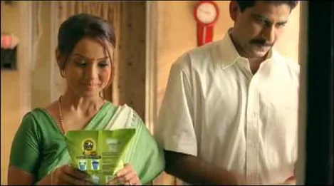
Tide Naturals / 2012 / RepresentationA Husband’s Thank-YouA detergent repositioned as a gift from husband to wife. 7×Return on marketing investmentIPA 2014 · Leo Burnett India for Procter & Gamble
Research by P&G India and Leo Burnett found that husbands, rather than their wives, decided which detergent to buy. The campaign turned Tide Naturals from an item on a shopping list into a way for a husband to show his appreciation.
Find out who actually makes the decision. It is often not the person in your ads.
Commercially sharp, and it put the real buyer in the picture. I’d still like to see it remade with the husband doing the washing.
Image: P&G and Leo Burnett India, Haryanvi Tide Naturals advert · YouTube upload cited by Hindustan Times
P&G launched Tide Naturals in rural India in 2009. Shoppers seemed convinced by the product, but sales fell short of expectations.
The advertising spoke to the person who made the decision and gave him a reason to buy that went beyond cleaning.
It turns a chore into something worth noticing. The product becomes the sign that the husband sees the work.
A reported ROMI of 7, with Tide Naturals described as the fastest-growing laundry brand in rural India. The summary doesn’t say whether the return is revenue or profit, or how it was modelled.
The insight came first, from research into who held the purchase decision. The return was then calculated for the 2012 to 2013 campaign.
IPA 2016 · Bronze · Robert/Boisen & Like-minded for Spies Travels
Robert/Boisen & Like-minded made a tongue-in-cheek film suggesting Danish couples should travel to have more sex and lift the country’s flagging birth rate. A year later ‘Do it for Mom’ turned the joke on would-be grandparents.
A small budget can still buy proof if the idea creates its own coverage.
Cheeky, cheap and measured. Proof isn’t only for brands with big budgets.
Image: Spies Rejser, Do It For Denmark! (2014) · official YouTube thumbnail
Danes were booking budget airlines and travel websites themselves. Spies, a 60-year-old operator known for family package holidays to the Mediterranean, was losing its place.
A package-holiday brand earned a role in a national conversation about population, and sold more city breaks and activity holidays because of it.
It presents a national statistic with a straight face and lets the absurdity do the work.
An estimated €5.80 of revenue for every euro across both campaigns. The summary’s net profit figure is incomplete, so only the revenue return is quoted here. Revenue is not profit, and the method isn’t described.
The return is calculated on a small, known budget of €670,000 across both films, set against sales of Spies city breaks and activity holidays.
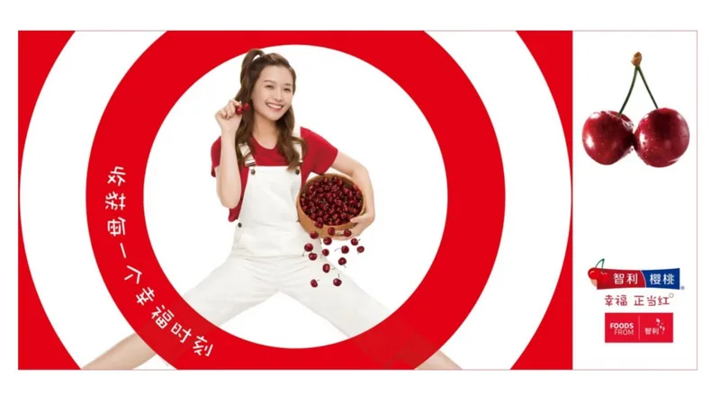
Cherries from Chile / 2016 / Owning a momentThe Red MomentA fruit that became a Chinese New Year gift. US$111mIncremental export revenueIPA 2022 · Bronze · ASOEX for the Chilean Fresh Fruit Exporters Association
The Chilean Fresh Fruit Exporters Association tied its cherries to Chinese New Year. Red stands for good fortune and joy, the price suggests wealth, and the campaigns invited people to share cherries at every ‘red moment’.
Tie the product to an occasion that already means something, and let the meaning do the persuading.
This was the case I knew least about, and it’s one of the cleverest. A trade body found a cultural moment and built four years around it.
Image: Cherries from Chile, 2019–20 China campaign artwork · Produce Report
Chile’s cherry growers were expanding production fast. Demand in China had to more than triple in four years, ahead of supply, to protect a premium price.
A commodity became a seasonal treat with a meaning. Cherry eaters in China rose from 42 million in 2016/17 to 134 million by 2019/20.
It borrows a colour that already carries meaning in the market. The fruit didn’t change. What it said when you gave it did.
An estimated US$111.1m of incremental export revenue, while total export value rose from US$552m to US$1.4bn. Much of that rise came with a planned expansion in production, so the estimate matters more than the headline growth.
Four campaigns over four seasons, for trade buyers and shoppers, held one positioning. The case estimates the marketing’s share of growth that more supply was also driving.
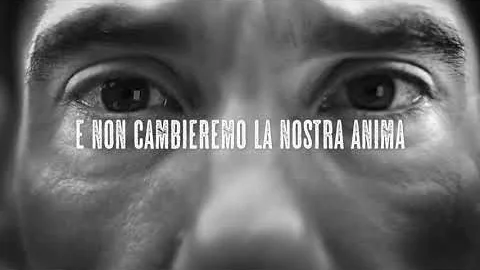
Birra Ichnusa / 2017 / RepresentationAnima SardaA Sardinian beer that proved its roots before selling them. €9.86Profit per €1 investedIPA 2024 · LePub for Heineken
A black-and-white campaign, ‘Anima Sarda’ or Sardinian soul, challenged mainland stereotypes about Sardinians and the idea of the island as only a holiday spot. The brand backed it on the island with beach clean-ups, returnable bottles and a donated fire engine.
If you need to look authentic, do something for the place before you advertise it.
The fire engine is my favourite detail in this edition. It is hard to accuse a brand of faking its roots when it is helping the island fight fires.
Image: Birra Ichnusa, Anima Sarda (2017) · official YouTube thumbnail
Ichnusa had been brewed in Sardinia for over a century and owned by Heineken since 1986, but until 2017 it was sold only on the island. A national launch risked making a local favourite look like a big brewer’s product.
Ichnusa went from Italy’s ninth-biggest beer brand to third in four years. Penetration tripled and its value share nearly quadrupled.
The films are faces, gestures and landscapes in black and white, closer to a documentary than a beer ad.
An estimated €9.86 of profit for every euro invested. The national launch also had Heineken’s distribution behind it, which the estimate has to separate from the communications.
The paper estimates profit per euro across the national roll-out, and tracks awareness, penetration and value share as the brand moved from one island to the whole country.
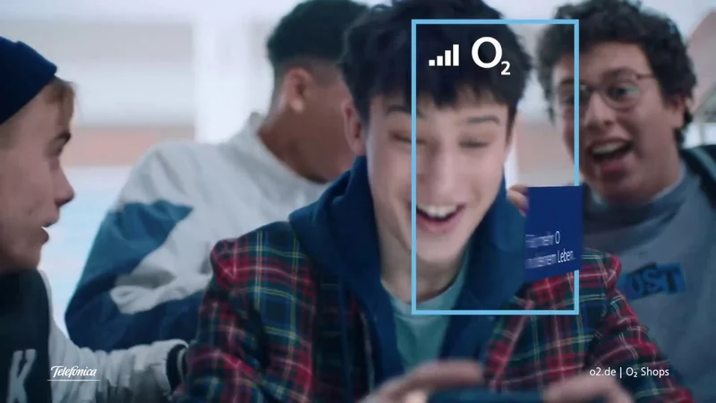
O2 Germany / 2019 / DemonstrationFür mehr O in deinem LebenA network that claimed the ‘Oh!’ you make at a great clip. 190%Return on marketing investmentIPA 2020 · BBDO Germany and Telefónica Germany
BBDO built 15-second ads from popular existing clips, rebranded as ‘O’ moments, then extended the idea to podcasts and clips from a hit German TV show. The insight was that content is only as good as the network it plays on.
If your product is invisible, sell the moment it makes possible.
Telecoms ads usually shout about coverage maps. Borrowing the internet’s best clips and claiming the reaction is a smarter way to say the same thing.
Image: Telefónica Germany and BBDO, Für mehr O in deinem Leben (2019) · 48k studio upload
After years of losing customers, O2 had fallen from second to fourth in the German market.
The brand name became the sound people make when something surprises them, and the network took the credit for the moment.
It turns the brand name into a reaction. Every ‘Oh!’ is a small brand mention the viewer makes without being asked.
A ROMI of 190%, 2% revenue growth and €50.2m of net profit, with 740,000 more new customers than Vodafone. The customer comparison describes the market. The ROMI is the estimate of what the advertising itself returned.
The case compares O2’s customer growth with Vodafone’s and estimates a return on the marketing spend, with profit attributed to the activity.
No campaigns match. Try clearing the search or setting a filter back to All.
05 / The evidence
Britain’s ITV map made the country a natural test bed. Leave one region without the ads, compare it with the rest, and the difference is the effect. Krona launched in two regions, and BT and Bovril each used Central as the region that saw nothing.
A model explains sales with everything that might move them, such as price, distribution, seasons and competitors, then estimates what the advertising added. Marmite’s paper rests on one, and so does Stella’s later profit paper.
ROMI and payback figures are not one measure. Some count revenue and some count profit, so €5.80 of revenue for Spies and €9.86 of profit for Ichnusa can’t be compared directly. Each card says which it is when the source does.
Papers are written to win. Experienced panels judge them, but they are not independent audits, and we only see campaigns whose owners chose to enter. Read every figure as the best public estimate, with its scope attached.
Every case gets one of five ratings, strongest first: modelled effect, sales trend, survey, reach only and archival. Here a control-region test counts as a modelled effect. A legacy fact, such as Krona’s first prize, is marked so it isn’t read as a result.
Each case changed how people saw a brand or a product, and has a published record of how it was measured. The collection is curated and unranked. Each case credits the campaign image separately from the evidence.
06 / Read on / Edition 01